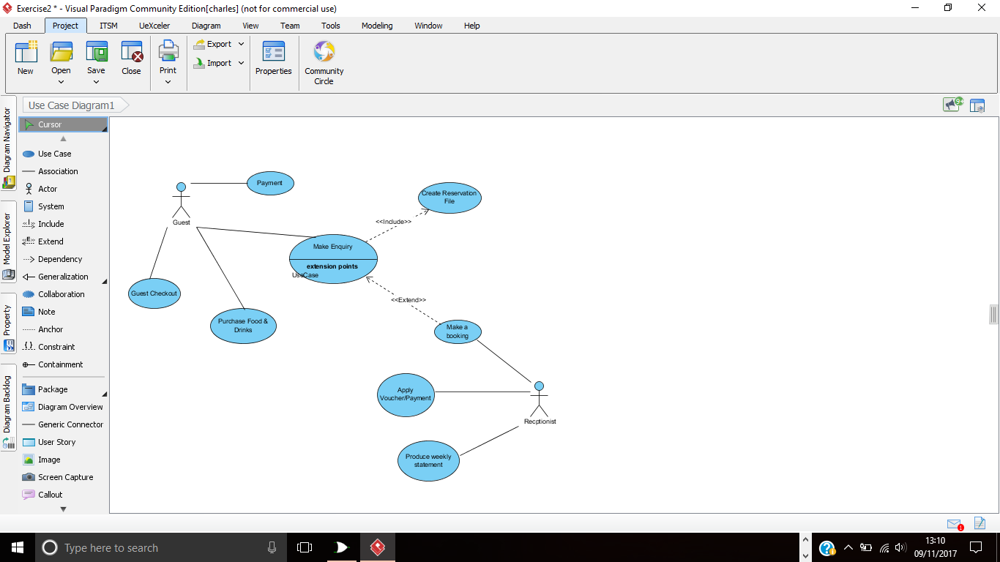
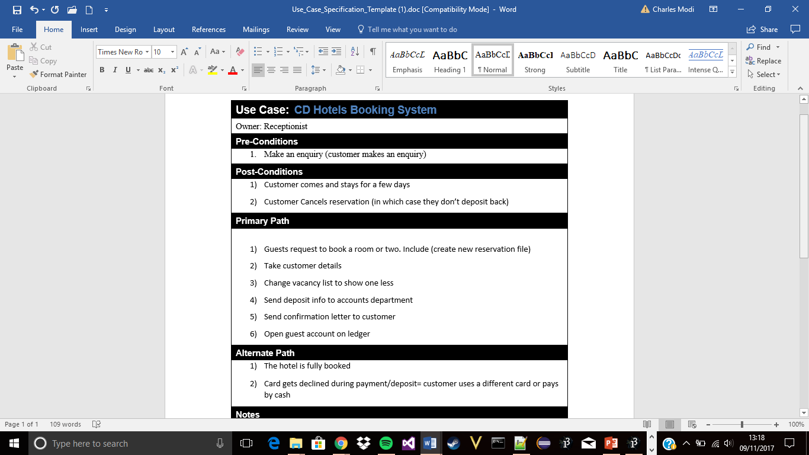
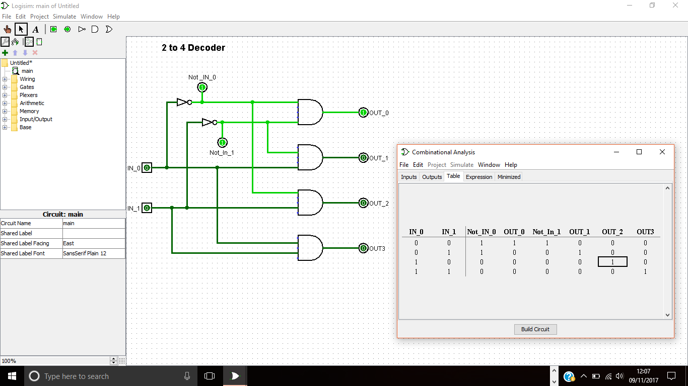
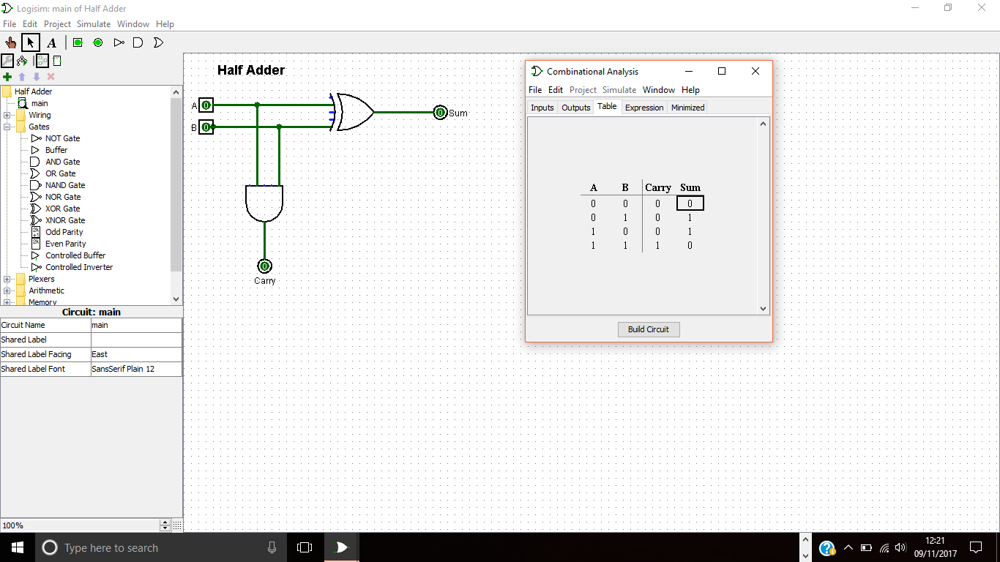

Information System
An introduction to the use of information systems in organisations which will show you how to develop key systems analysis techniques to be applied to information systems built on a commercial Relational Database Management System (RDBMS).
Topics include:
- Business activities supported by information systems including case studies and examples
- Use of information systems for management information and decision making, business operations and data processing
- E-commerce theory, information systems and society
- Systems analysis and design techniques including UML use cases
- Database management systems and database design/development: entity relationship diagrams (ERDs), normalisation, SQL
Progress so far..
Currently in the lab sessions we have been set a case study which is to be completed as part of a group gradually, the case study is to produce a computer base system to replace the current paper based system that is being used in Ray’s Rental.
The group that am part of have completed part A of the case study which was to highlight the current flaws of the system currently used, getting a brief overview of how it works.
We are currently using Visual Paradigm to draw Use Case Diagrams for case study examples, just to get a better understanding of how the programme works before actually creating the User Case and Entity Relationship Diagrams.
Alongside Java Programming, I consider Information System to be one of the units that I enjoy, due to it being group oriented, everyone has to contribute and its good having a group of people to review your work before it’s submission.
 Computer Systems Fundamentals
This unit provides an introduction to the fundamental principles and mathematics underpinning the design and construction of computer systems, including:
- Digital Logic and Boolean Algebra: digital logic gates and circuits, Karnaugh maps, use of a digital logic circuit simulator, components of a CPU, processor model, Fetch execute cycle, hardware interrupts
- Assembly Language Programming: relationship between high level languages and assembler, instruction sets, registers, debugging
- Discrete Mathematics: matrices and vectors, matrices as linear transforms
- Functions: definition, properties
- Sets: subsets, set algebra
- Logic: propositions, predicates, propositional algebra, proof of simple results
Progress so far...
Up to this point in CSF, I learnt:
- Decoder, Half Adder, Full Adder, the ALU, Memory and Registers
- Boolean simplification
- Karnaugh Maps
- The CPU Fetch-Execute cycle
- Sets
- Matrices & Vectors
Currently, I have enjoyed the lab sessions where we have been using Logisims to produce circuit diagrams, the program can be used to create circuit diagrams and to check whether they actually work. The program doesn’t have too many features that could make it complex and hard to understand.
However, Mathematics is probably the hardest and less enjoyable unit alongside Web Development, they both require a considerable amount of time to be invested to them in order for you to understand it compared to the other units.
 